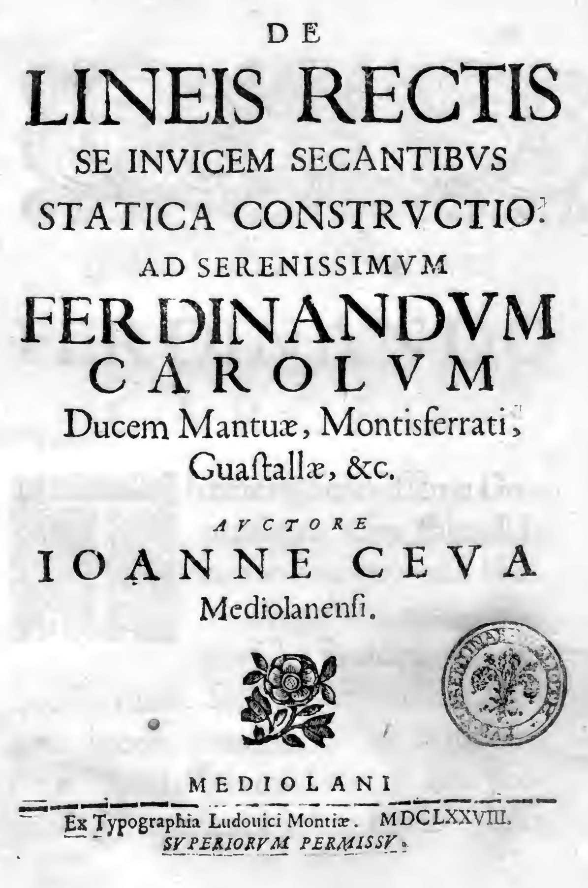

Titulus Operis · Mediolani MDCLXXVIII¶



DE LINEIS RECTIS SE INVICEM SECANTIBVS STATICA CONSTRVCTIO.
AD SERENISSIMVM FERDINANDVM CAROLVM, Ducem Mantuæ, Montisferrati, Guastallæ, &c.
AVCTORE IOANNE CEVA Mediolanensi.
MEDIOLANI, Ex Typographia Ludouici Montiæ. MDCLXXVIII. SVPERIORVM PERMISSV.
f. 0001 · p. Front Cover f. 0002 · p. Front Pastedown f. 0003 · p. Spine f. 0004 · pp. Fore-Edge f. 0005 · p. Top Edge f. 0006 · p. Bottom Edge f. 0007 · p. Flyleaf 1r f. 0008 · p. Flyleaf 1v f. 0009 · p. Flyleaf 2r f. 0011 · p. Title Page Verso